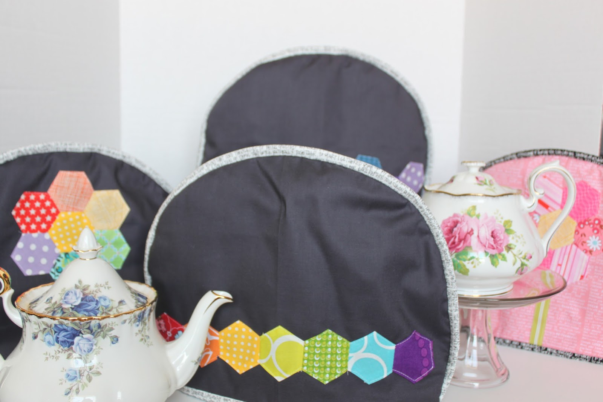

Paper Pieced Kimono Tea Cozy
Sustainable Stitches Series Sponsored by Sul
Paper Pieced Kimono Tea Cozy:
Use up your prettiest scraps as you create a charming tea cozy! You’ll learn how easy it is to use paper piecing to create precise designs, even with tiny pieces. It’s a great way to keep your teapot warm while showcasing your favorite fabrics
Featured Sulky Products:
- Sulky KK 2000 Spray Adhesive
- Soft ‘n’ Sheer Extra Stabilizer
- Sulky Perfect Applique
- Sulky Stick ‘n Stitch
- Sulky Thread: Rayon and Metallic for embellishment, Polyester for construction
Step-by-Step Instructions for the Paper Pieced Kimono Tea Cozy:
1. Prepare the Fabric Pieces
Choose fabrics for your tea cozy. Typically, you would choose a mix of colorful fabrics for the kimono design and a neutral fabric for the tea cozy backing.
Cut out the fabric pieces according to your paper piecing template. You will need to have the fabric ready to be sewn together as per the template’s instructions.
2. Stabilize the Fabric
To ensure your fabric stays in place while you work, use Sulky KK 2000 Spray Adhesive. Lightly spray the back of your fabric pieces and press them onto the paper piecing template.
This will help keep the fabric stable while you sew.
3. Using Soft ‘n’ Sheer Extra Stabilizer
For extra support, especially in delicate or thin fabrics, you can place Soft ‘n’ Sheer Extra Stabilizer behind the fabric where you will be doing the applique or decorative stitching. This stabilizer helps prevent puckering and distortion during stitching.
Cut the stabilizer to the size of your fabric pieces and pin or adhere it to the back of the fabric.
4. Create the Kimono Design Using Paper Piecing
Follow your paper piecing pattern, and sew the fabric pieces together as per the instructions. The Sulky KK 2000 Spray Adhesive should hold the fabric in place while you stitch.
Carefully press each piece of fabric as you move along, ensuring the pieces are aligned and securely stitched.
5. Applique the Details Using Sulky Perfect Applique
If your kimono design includes intricate details or appliqué shapes, use Sulky Perfect Applique. This is a fusible webbing product that can be applied to your fabric shapes, and then pressed onto the tea cozy. It will keep the appliqué pieces secure as you stitch them down.
Place the appliqué pieces where desired on the kimono and press them into place using a hot iron.
6. Adding Embellishment with Sulky Stick ‘n Stitch
To add beautiful texture and design to the kimono, use Sulky Stick ‘n Stitch. This is a water-soluble stabilizer that allows you to stitch over it and then wash away the stabilizer, leaving only your thread work behind.
You can use this to add small embroidery designs or texture to the kimono.
Cut the Sulky Stick ‘n Stitch to the desired shape, trace your design onto it, and then stitch over the design with your chosen Sulky Rayon and Metallic Threads for an embellished look.
After stitching, dissolve the Stick ‘n Stitch with water, leaving your design on the fabric.
7. Sewing the Kimono Tea Cozy Together
Once the paper pieced sections and appliqué are complete, you can sew the pieces together to form the tea cozy. Use Sulky Polyester Thread for the construction of the tea cozy to ensure a durable and strong seam.
If you’re using a sewing machine, sew the sides of the tea cozy, leaving an opening at the top for the lid.
You can also add any additional embellishments or decorative stitches along the edges for a refined finish.
8. Add Embellishments with Sulky Rayon and Metallic Threads
For final decorative touches, use Sulky Rayon and Metallic Threads to embellish the kimono. These threads are perfect for adding shiny, vibrant accents to the fabric, such as stitching along the kimono's edges, adding designs to the sleeves, or creating floral patterns or borders.
Use embroidery stitches such as satin stitch, French knots, or back stitch to bring the design to life.
9. Finish the Tea Cozy
Once you have completed all the stitching and embellishments, fold and sew the tea cozy into its final shape. Use Sulky Polyester Thread for the final construction seams.
Add a lining if desired, and sew the top edges to complete the cozy. Add any extra features like a small loop for hanging, if desired.

Share tips, start a discussion, or ask one of our experts or other students a question.